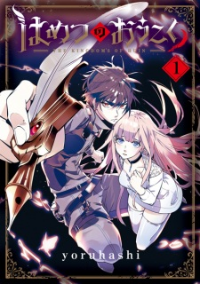
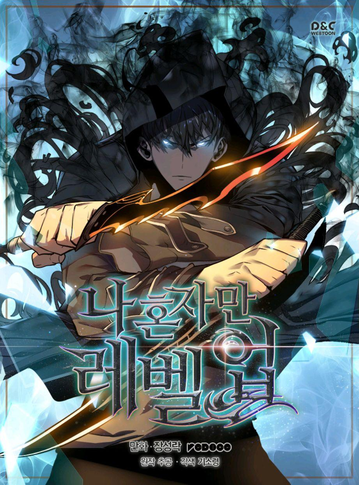
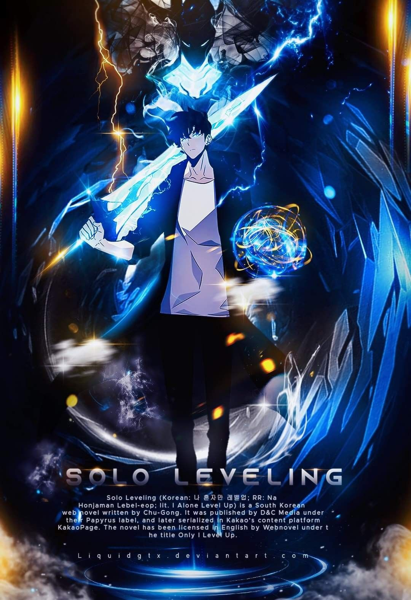

Light Novel 'Toaru Ossan no VRMMO Katsudouki' Gets TV AnimePublishing company AlphaPolis announced a television anime adaptation of Howahowa Shiina's Toaru Ossan no VRMMO Katsudouki |

Manga 'Hametsu no Oukoku' Gets TV Anime in 2023Publisher Mag Garden opened an official website for a television anime adaptation of yoruhashi's Hametsu no Oukoku (The Kingdoms of Ruin) manga on Wednesday. |


Vinland Saga Season 2After his father's death and the destruction of his village at the hands of English raiders, Einar wishes for a peaceful life with his family on their newly rebuilt farms. |
 

Solo LevelingAn upcoming Solo Leveling anime is confirmed by Crunchyroll! It was announced during Crunchyroll’s Anime Expo 2022 Industry Panel. A-1 Pictures (Sword Art Online, Kaguya-sama: Love is War) is animating the series. Shunsuke Nakashige (Sword Art Online: Alicization) is directing the series and Tomoko Sudo (Alice in Borderland OVA) is doing the character designs. Hiroyuki Sawano (Attack on Titan, Kill la Kill) is composing and writing the music for Solo Leveling. |

MashleAn upcoming Mashle anime is confirmed by Aniplex. Mashle is adapted from the manga Mashle: Magic and Muscles by Hajime Komoto, which is one of my favorite comedy manga. On top of being a comedy, it is also a supernatural and action story. The team behind the anime have yet to be revealed, but we will keep you posted as we learn more. |

Tomo-chan Is a Girl!An upcoming Tomo-chan Is a Girl! anime was confirmed during the the Crunchyroll Industry Panel at Anime Expo 2022. Animating the anime are Lay-duce (Magi: Adventure of Sinbad, Our love has always been 10 centimeters apart.). Directing the series is Hitoshi Nanba (Golden Kamuy, Grappler Baki). The music for Tomo-chan Is a Girl! is being composed and written by Masaru Yokoyama (Your Lie in April, Horimiya, Fruits Basket). |